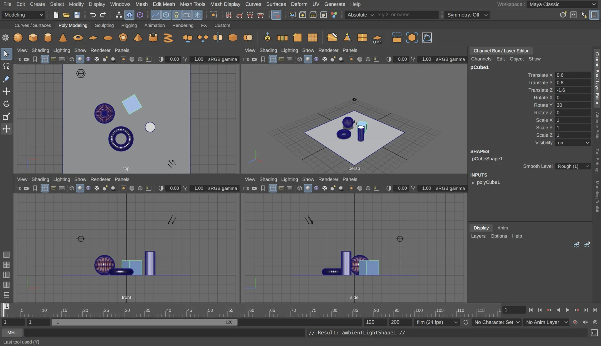
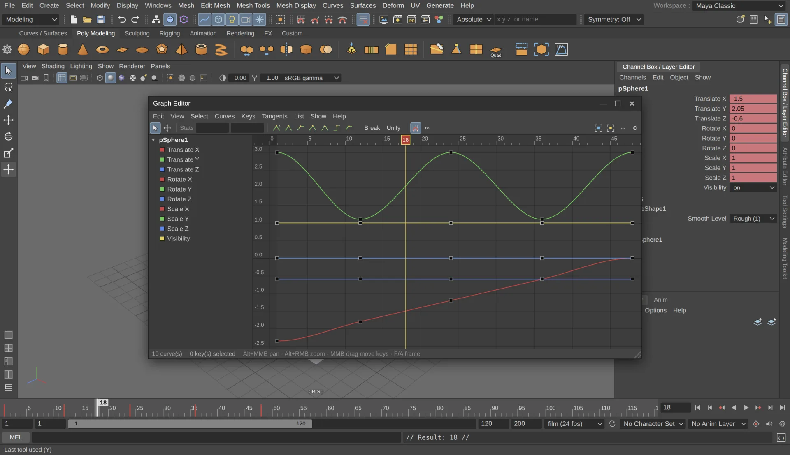
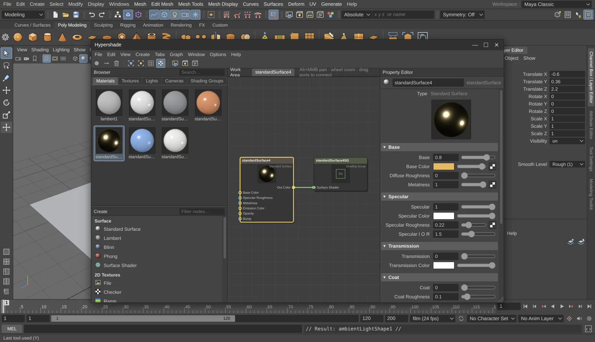
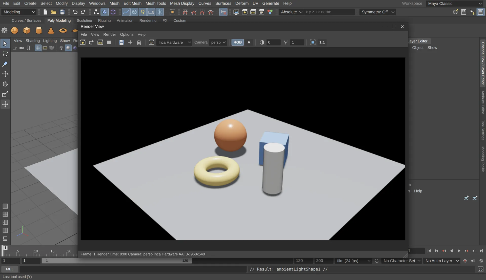
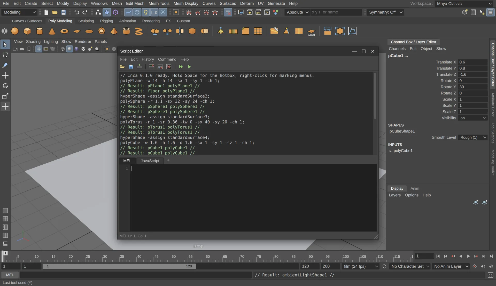

3D modeling
Build anything, and change it later
Polygon modeling on n-gon meshes with extrude, bevel, bridge, multi-cut, booleans, quad draw and sculpting brushes. NURBS primitives, and CV, EP, pencil and arc curves for revolve, loft and extrude. Every step keeps its construction history, so you can go back and change a bevel's segments after the fact.


Animation & rigging
Bring characters to life
Set keys, scrub the Time Slider and shape motion in the Graph Editor and Dope Sheet. Build skeletons with IK, bind skin and paint weights, then drive them with constraints, deformers, blend shapes and set driven keys.


Look development
Shade in the Hypershade
Create Standard Surface, Lambert, Blinn and Phong materials, connect file, checker, ramp, noise and grid textures in the node graph, and drag the result onto your models.


Rendering
Render without leaving the app
A physically based path tracer for final frames and a fast hardware renderer for previews. Compare images in the Render View, or batch a whole sequence to your project's images folder.


Customization
Script it with MEL or JavaScript
Every menu item and tool echoes the command it ran. Paste it into the Script Editor, wrap it in a loop, and save it to the shelf.
See all features

What's included
One app for the whole pipeline
Interface
Menu sets, shelves, hotbox, marking menus, Channel Box, Attribute Editor, Outliner and workspaces.
UVs
Planar, cylindrical, spherical and automatic projection, plus a UV Editor with unfold and layout.
Lighting
Directional, point, spot, area and ambient lights, and a sky dome with HDRI or procedural sky.
Dynamics
Particle emitters, fields, active and passive rigid bodies, and fire and smoke presets.
Files
Projects, autosave and recent files. Import OBJ, FBX, glTF/GLB and STL; export OBJ, glTF/GLB and STL.
Editors
Graph Editor, Dope Sheet, UV Editor, Hypergraph, Connection Editor and Script Editor.
For Maya users
Your hotkeys already work
Inca follows Maya 2020's layout, default hotkeys and naming, down to pCube1 and polyCube1. There's nothing new to learn before you start.
- Q W E R
- Select, move, rotate, scale
- Alt + drag
- Tumble, track, dolly
- Space
- Hotbox, or tap for four views
- F A
- Frame selected, frame all
- 1 2 3
- Smooth mesh preview
- 4 5 6 7
- Wireframe, shaded, textured, lights
- F8 – F12
- Object and component modes
- S
- Set key
Download
Get Inca
No installer, no account. Download it and start working.
Windows
64-bit. The portable exe runs without installing anything. If SmartScreen stops it, click More info, then Run anyway.
Linux
64-bit AppImage for most distributions. Make it executable with chmod +x, then run it.
macOS
Drag Inca into Applications. The first time, macOS can't verify it: open System Settings → Privacy & Security and click Open Anyway.
Release notes and older versions are on the releases page.
FAQ
Questions
Is Inca really free?
Yes. It's open source under the MIT license, with no subscription or account, and you can use it for commercial work.
Can it open Maya scenes?
Not .ma or .mb files. Bring models across as OBJ, FBX or glTF. Inca saves its own scenes as .inca files.
Is it made by Autodesk?
No. Inca is an independent project that recreates the Maya 2020 workflow. It isn't affiliated with Autodesk.
Is there a Mac version?
Yes, as a .dmg for Apple Silicon (M1 and newer) and Intel Macs. Inca isn't registered with Apple, so the first time you open it, go to System Settings → Privacy & Security and click Open Anyway. You only do this once.
How do I report a bug or ask for a feature?
Open an issue on GitHub. It helps to say how Maya behaves in the same situation. Pull requests are welcome too.